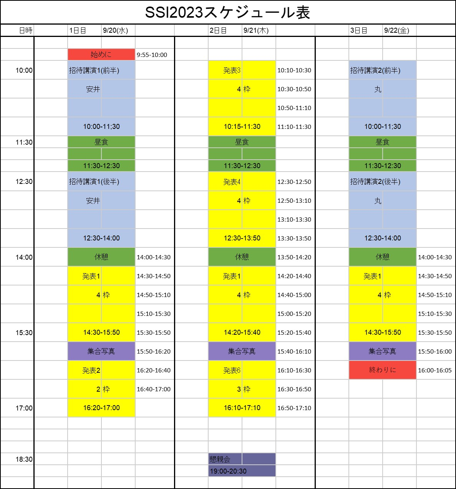
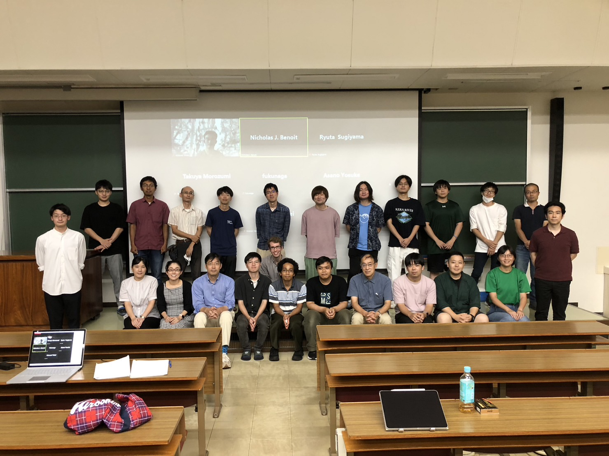
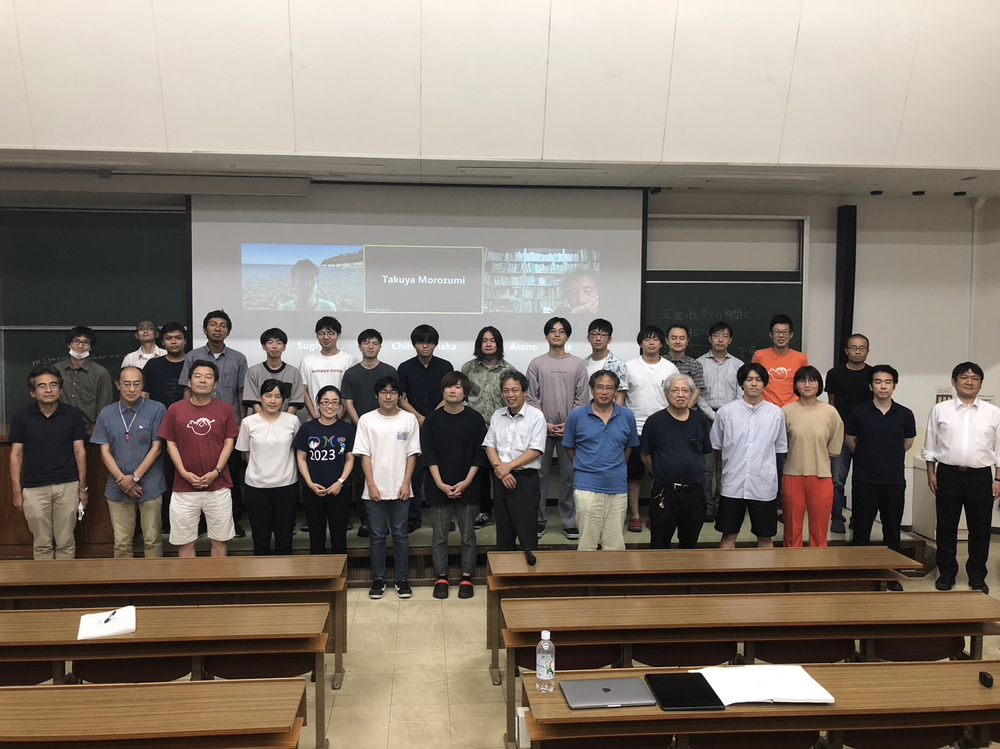
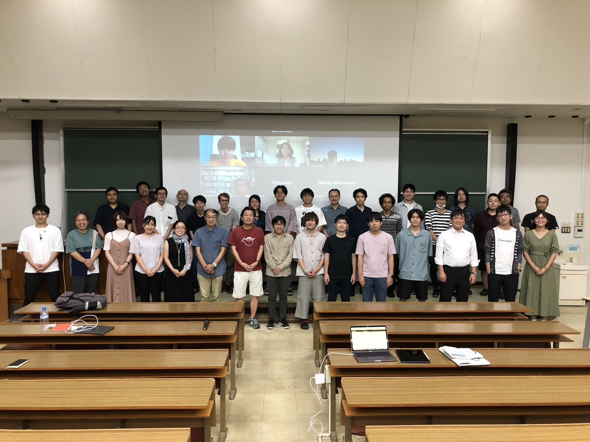

開催趣旨
瀬戸内サマーインスティテュート（SSI）とは、 瀬戸内近辺の大学の素粒子物理とハドロン物理の研究室（広島, 山口, 愛媛, 島根, 九州, 高知大学など）が集まり、 招待講演や研究発表など互いの親睦を深めることを目的とした研究会であり、毎年3日間の日程で、50人程度の規模で行っております。
今年度も中国四国地方の素粒子物理学分野とハドロン物理分野の若手育成および人材交流を目的として、 以下の通り、「SSI 2023」を開催します。
参加登録
- SSI2023の参加および発表（口頭のみ）の登録は こちらからお願いします。
- 参加登録は8/31迄となっておりますので、お早めにご登録お願いします。
- 原則旅費は自費をお願いしておりますが、学生の方で旅費がどうしても必要な場合は上村（m234555@hiroshima-u.ac.jp）までお問い合わせ下さい（口頭発表される方のみ）。
日程/会場
プログラム
プログラムは大きく分けて招待講演と口頭発表の2つに分かれます。
[招待講演]
招待講演はスライドや黒板を用いた講義形式で実施します。 講演内容は大学院向けの内容で行います。 対面とオンラインどちらでもご参加いただけます。 ただし、できる限り対面参加優先でご参加下さい。
予定されている講義は以下の通りです。
<招待講演1>
9/20 (水)
<1コマ>10:00 - 11:30, <2コマ>12:30 - 14:00
- 題目: チャーム・ボトムのエキゾチックハドロン物理の最近の発展
<招待講演2>
9/22 (金)
<1コマ>10:00 - 11:30, <2コマ>12:30 - 14:00
- 題目: 素粒子標準模型を超える物理の基礎
- 講師: 丸 信人（大阪公立大学）
-
概要:
素粒子標準模型の問題点とそれを超える物理として、 大統一理論、超対称理論、高次元理論の模型構築の基礎的事項について概観する。 - 講義資料:こちらをクリック
[口頭発表]
1人あたり20分（15+5分）程度の時間配分で口頭発表を設けます。
発表内容の詳細はこちらをクリック
発表スライド
発表1:[1]
9/20 (水) - 9/22（金）
- 対面を推奨しておりますが、対面とオンライン両方でご参加いただけます。
- 発表者は各自発表スライドを準備してご参加下さい。
集合写真
- 休憩時間中に写真撮影を予定していますのでご協力お願い致します。 Zoomでご参加の方はぜひ画面を ON にして撮影にご参加下さい。
- 撮影を予定している日時は以下になります。
- 9/20（水）15:50~16:00
- 9/21（木）15:40~15:50
- 9/22（金）15:50~16:00
1日目
2日目
3日目
SSI2023 は、全日程終了致しました。 ご参加・ご協力ありがとうございました。 次回もどうぞよろしくお願いします。